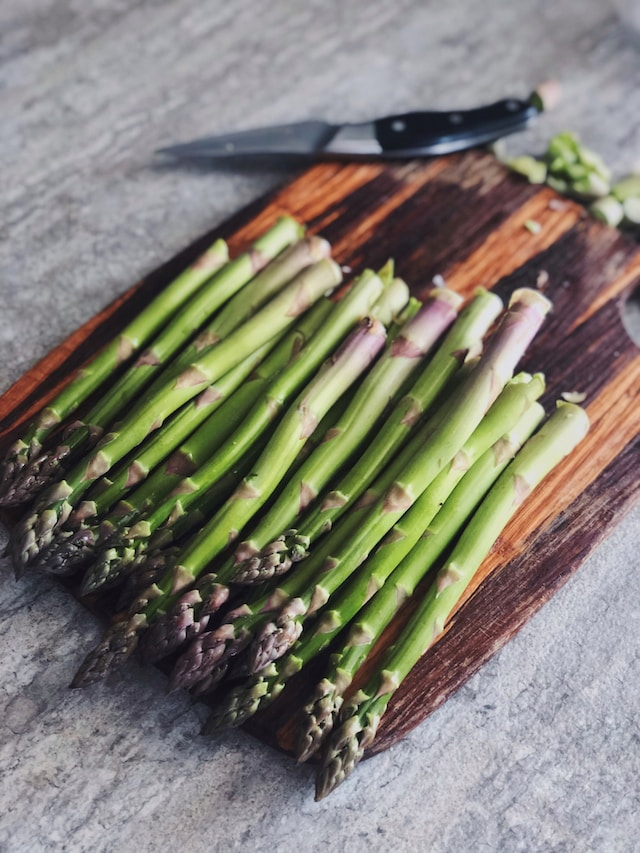

Roasted Asparagus Recipe

Description
Asparagus tastes slighty nutty and sweet when roasted in the oven, and makes an excellent veggie side for steaks, chops, and fillets.
Ingredients
- 1 bushel of asparagus
- 3 tbsp extra virgin olive oil
- 1½ tbsp grated Parmesan cheese
- 2 tsp garlic powder
- 1 tsp sea salt
- ½ tsp groud black pepper
- 1 lemon wedge
Steps
- Preheat the overn to 425℉.
- Trim off the woody ends of the aspargus, about 1 inch.
- Add aspragus into baking dish and coat with olive oil, cheese, salt, garlic powder.
- Roast for 12-15 minutes, when stalks are easily piered with a fork.
- Spritz with lemon juice to taste.